Адрес приложения: sangoskarlet.github.io/bar-app/ · Инструкция для внутреннего использования
Содержание
Что внутри
Разделы идут в том порядке, в котором ими пользуются в смену: сначала поставить приложение и войти, потом работа, в конце — проблемы и памятка.
1
Как поставить приложение на телефонiPhone и Android, работа без интернета, где взять адрес
3
2
Вход и смена сотрудникаимя и PIN, если PIN не подходит, кнопка «Сменить»
3
3
Главный экранплитки, строка смены и строка синхронизации внизу
4
4
Инвентаризацияместо, категория, количество, «Нет в описи», голос
5
5
ТТКкак найти рецепт и что делать, если позиции нет
6
6
Переработкаакт, «было / стало», мята в двух полях, выход позже
7
7
Этикетка 30×20Android, iPhone, Label Expert, срок хранения
8
8
Фото уборкиэтаж, зоны, вердикты и что с ними делать
9
9
Стоп-листфото экрана планшета, дни в стопе, ручной ввод
10
10
Чек-листыоткрытие и закрытие, фото, комментарии
11
11
Викторина и дуэльвопросы, обжалование, комната по коду
12
12
Проблемы и что делатьтаблица: не отправляется, не печатает, не пускает
13
13
Памятка на одну страницу10 главных правил смены
14
Как читать инструкцию
Названия кнопок и разделов напечатаны так, как они выглядят в приложении: «Сохранить», «Сменить», «Снять стоп-лист».
Скриншоты — примеры экранов. У вас будут другие имена, позиции и цифры, но кнопки называются так же.
Рамки с красной полосой слева — важное. Их стоит прочитать до того, как нажимать.
1Как поставить приложение на телефон
Приложение открывается в браузере, но ставится на главный экран как обычное. После первого запуска работает без интернета.
iPhone — через Safari
Откройте адрес sangoskarlet.github.io/bar-app/ в Safari.
Нажмите кнопку «Поделиться» — квадрат со стрелкой вверх.
Пролистайте меню и выберите «На экран „Домой“».
Нажмите «Добавить».
Android — через Chrome
Откройте тот же адрес в Chrome.
Нажмите три точки в правом верхнем углу.
Выберите «Установить приложение» (в старых версиях — «Добавить на главный экран»).
Подтвердите «Установить».
Работает без интернета
Справочник, ТТК и фото сохраняются на телефоне. Без связи можно считать, фотографировать и заполнять акты — записи будут ждать отправки.
Интернет нужен для первого запуска, входа и отправки. Если приложение ещё ни разу не открывалось, без сети оно не запустится.
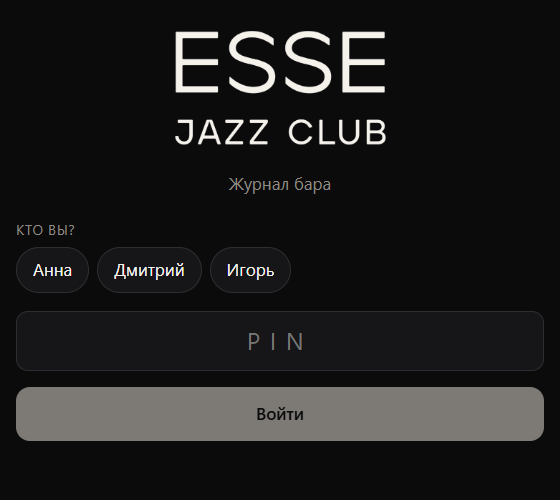
Сначала приложение просит выбрать имя и ввести PIN.
2Вход и смена сотрудника
Приложение знает, кто работает, и подписывает именем каждую запись: кто снял стоп-лист, закрыл акт, посчитал товар.
Выберите своё имя в списке «Кто вы?».
Введите PIN.
Нажмите «Войти».
Если PIN не подходит
Проверьте, что выбрано ваше имя: запись идёт на выбранного сотрудника.
После 8 неверных PIN подряд приложение напишет: «Слишком много неверных PIN. Подождите 15 минут.» Это защита, а не поломка — подождите.
Если написано «Сотрудник не найден или отключён» — вас нет в списке работающих. Попросите владельца включить вас.
PIN не подбирайте: его выдаёт владелец или старший бармен.
Сменить сотрудника
На главной сверху: «Смена: Имя» и кнопка «Сменить». Нажмите её, когда телефон передаёте коллеге. Если в очереди есть неотправленные записи, приложение предупредит — они всё равно отправятся.
3Главный экран
Главный экран — это плитки разделов. Сверху видно, кто в смене, снизу — ушли ли записи в журнал.
Что означают плитки
Перенос
кухня ⇄ бар: отдать или принять товар
Списание
бой, порча, проливы
Фото уборки
зоны после смены
Стоп-лист
что закончилось
Чек-листы
смены и заготовки
ТТК
рецептуры
Инвентаризация
подсчёт остатков
Викторина
вопросы смены
Дуэль
два игрока
Переработка
заготовки и выход
На плитке «Переработка» может быть значок «⏳ N в работе» — столько актов начато и ещё не закрыто. Это не ошибка, но их лучше закрыть в ту же смену.
Строка смены
Сверху написано «Смена: Анна» и кнопка «Сменить». Проверьте имя перед началом работы: все записи подпишутся им. Под именем иногда появляется «факт дня» — на работу он не влияет.
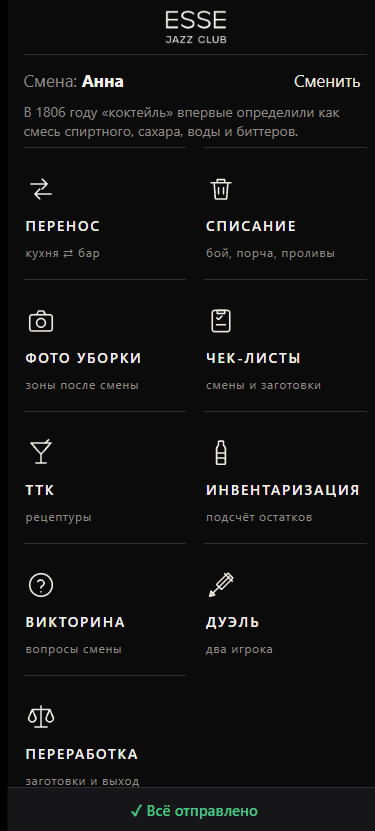
Плитки главного экрана. У вас будут те же разделы, но, возможно, в другом порядке.
Строка синхронизации внизу — три состояния
Это самое частое место недоумения. Внизу экрана всегда видна полоска: она говорит, что происходит с записями.
Что написано
Что это значит
Что делать
«✓ Всё отправлено»
Все записи отправлены. Можно закрывать приложение.
Ничего.
«Отправка… осталось N» «Ждут отправки: N. Нажмите, чтобы отправить»
Записи сохранены на телефоне и ещё не ушли. Приложение отправит их само, как только сможет.
Интернета нет. Ничего не потеряно: всё лежит на телефоне.
Работайте дальше. Когда связь вернётся, полоска сама сменится на «✓ Всё отправлено».
Если написано «Отклонено: N»
Запись не приняли. Нажмите на полоску: там будет причина. Чаще всего это смена PIN. Тогда: «Сменить» → войти с новым PIN → вернуться в «Отправка» → «Повторить».
4Инвентаризация
Инвентаризация — это подсчёт остатков. Вы выбираете место и позицию, вводите количество, и цифра сразу сохраняется на телефоне.
На главной нажмите «Инвентаризация». Сверху будет видно, какая инвентаризация идёт: «Идёт: …».
Если написано «Сейчас нет активной инвентаризации» — её ещё не включили. Нажмите «Обновить» или спросите менеджера.
Выберите место в блоке «Где считаете?» — например, «Бар 1 этаж», «Бар 2 этаж», «Склад».
Выберите категорию: «Джин», «Ром», «Виски»… Справа цифра «0 / 2» — сколько позиций уже посчитано.
Выберите позицию. Введите «Полных (закрытых)» и «Открытая: остаток, мл».
Если удобнее взвесить — нажмите «Весом» и введите вес на весах вместе с тарой. «Итого» посчитается само.
Нажмите «Сохранить». Цифра сразу на телефоне, даже без сети.
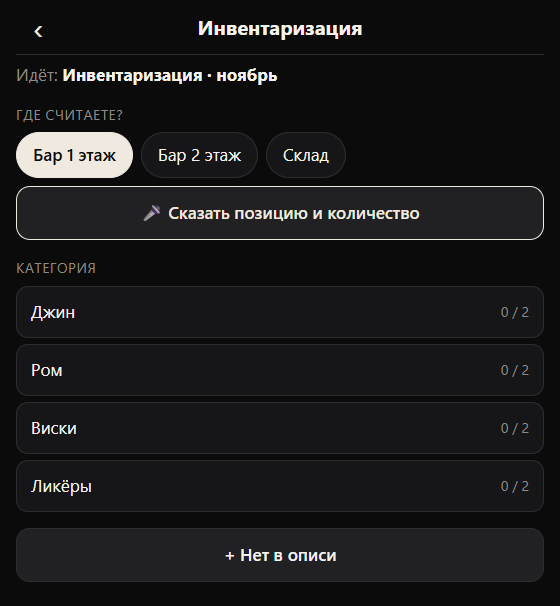
Место и категории. Справа — сколько уже посчитано.
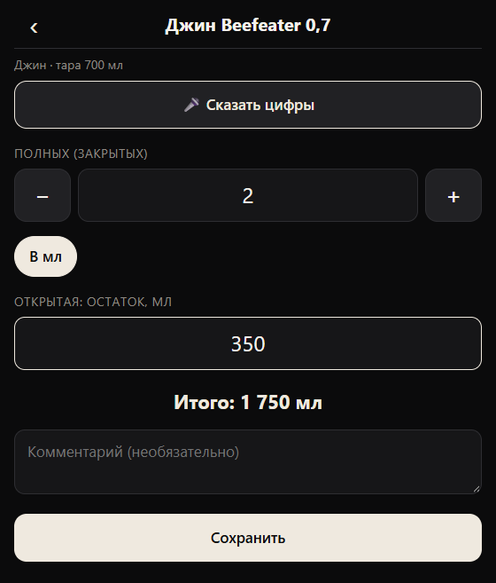
Полные, открытая и итог. «Итого» считается само.
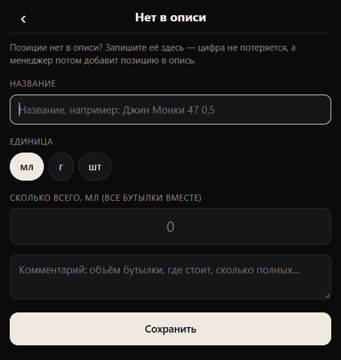
«Нет в описи»: название, единица и общее количество.
Голосовой ввод
На экране места и на экране позиций есть кнопка «Сказать позицию и количество». Скажите: «Бомбей, две полных, открытая триста пятьдесят». Приложение откроет нужную позицию и подставит цифры.
Если название не разобрано точно, появится вопрос «Услышал: „…“. Что именно?“» — выберите позицию из списка.
На экране позиции кнопка «Сказать цифры» принимает только количество — название уже выбрано.
Голос работает в Chrome, Safari и Edge. В других браузерах вместо кнопки будет подсказка — пользуйтесь микрофоном на клавиатуре телефона.
«Нет в описи»
Позиции нет в списке? Нажмите «+ Нет в описи», впишите название, выберите единицу (мл, г, шт) и общее количество. Нажмите «Сохранить» — цифра не потеряется, а менеджер добавит позицию в опись.
5ТТК
ТТК — рецептуры. Здесь можно найти коктейль и посмотреть состав, бокал, метод и подачу. Работает без интернета.
На главной нажмите «ТТК».
Начните вводить название в поле «Поиск по названию или ингредиенту…» — например, «Апероль» или «лайм».
Нажмите на позицию. Откроется карточка: категория, бокал, метод, ингредиенты, гарнир, подача и заметки.
Прокрутите вниз: под рецептом будет фото, если оно есть у позиции.
Без интернета
Рецепты хранятся на телефоне. Фото докачиваются заранее; если фото ещё не скачалось, вместо него будет надпись «Фото загрузится, когда появится интернет» — рецепт от этого не пропадает.
Если позиции нет
Поиск покажет «Ничего не найдено». В ТТК нет кнопки «добавить» — рецептуры ведёт владелец. Не готовьте по памяти: уточните рецепт у старшего бармена и скажите менеджеру, какой позиции не хватает.
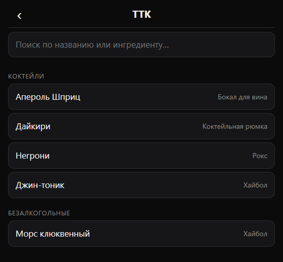
Поиск и список по категориям.
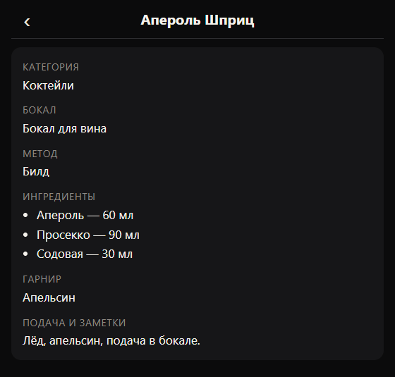
Карточка: бокал, метод, ингредиенты.
Что означает каждое поле
Поле
Что это
Категория
К какой группе относится позиция: коктейли, безалкогольные и т. д.
Бокал
В какой бокал подавать.
Метод
Как готовить: билд, шейк, стир.
Ингредиенты
Состав и количество на одну порцию.
Гарнир
Чем украшать и что класть в бокал.
Подача и заметки
Особенности подачи, которые важно не забыть.
Совет: ищите по ингредиенту
Помните вкус, но не название? Введите в поиск «лайм», «имбирь» или «просекко» — приложение покажет все позиции, где он есть.
6Переработка
Акт переработки — это запись: сколько взяли сырья и сколько получилось. Из акта сразу печатается этикетка 30×20.
Открыть акт
На главной нажмите «Переработка».
Сверху видно «⏳ В работе — впишите выход (N)» — это начатые акты. Их может закрыть любой бармен.
Ниже выберите акт в списке «Простые: было → стало» или «По рецепту». Поиск — «мята, фреш, кордиал…».
Заполнить «было / стало»
Было — сколько сырья взяли.
Стало — сколько получилось. Выход в процентах посчитается сам.
Ещё не готово — оставьте «стало» пустым. Кнопка станет «⏳ Сохранить, выход позже».
В акте по рецепту впишите ключевое сырьё — остальное посчитается по пропорции («Замес: ×2 от рецепта»). Цифры можно поправить.
Где нужна чистка, будет два поля: «грязный» и «чистый». В рецепт идёт чистый вес.
Мята: два поля
У мяты два поля: «листья, г» и «ветки, г». Вводите в любое — второе пересчитается по долям (например, 0,6 / 0,4). Метка «взвешено» показывает, какое поле вы ввели руками. Выход считается по вашей позиции, ветки — справочно.
Закрыть акт
Откройте акт из «⏳ В работе».
Впишите «Получилось».
Если выход сильно отличается от ожидаемого, приложение переспросит и попросит комментарий — напишите причину.
Нажмите «Закрыть акт». Появится «Акт закрыт» и этикетка.
Не откладывайте закрытие
Незакрытый акт висит в «В работе» и через сутки подсвечивается красным. Закрывайте в ту же смену.
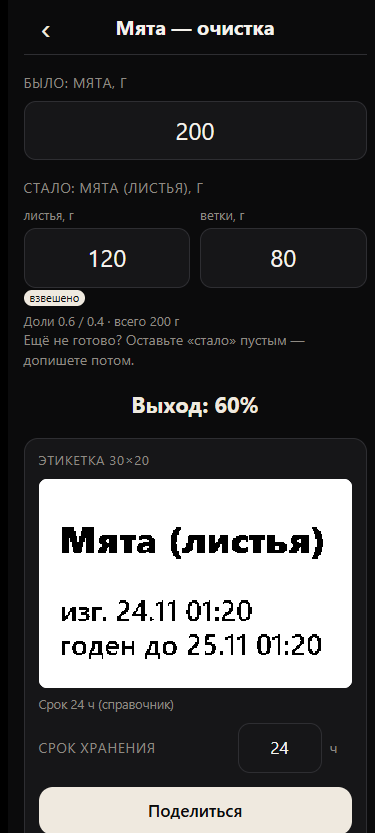
Мята: два поля и пересчёт. Этикетка появляется сразу, как только вписан выход.
7Этикетка 30×20
Этикетка — картинка 30×20 мм для Bluetooth-принтера. Её печатают из приложения Label Expert, а не из системного окна печати.
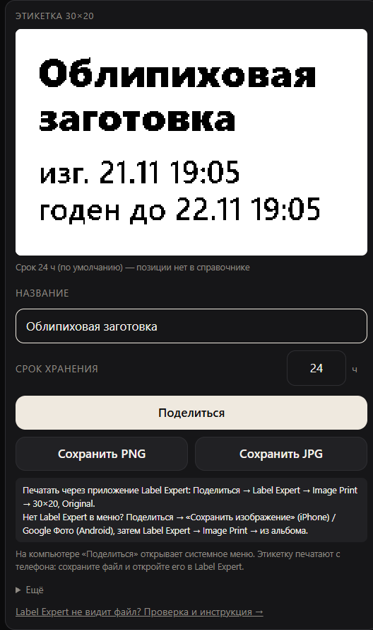
Android: главная кнопка «Поделиться».
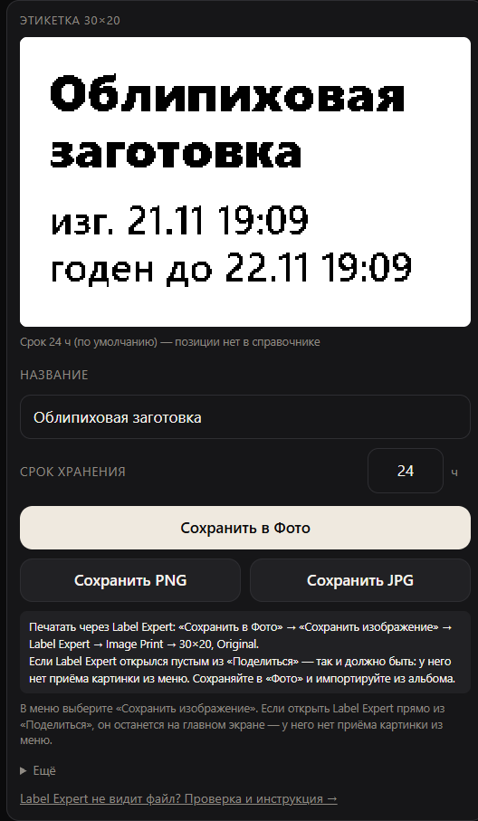
iPhone: главная кнопка «Сохранить в Фото».
Где кнопки. Блок «Этикетка 30×20» появляется в акте, как только вписан выход, и на экране «Акт сохранён». Под превью — «Поделиться» (Android) или «Сохранить в Фото» (iPhone), ниже «Сохранить PNG» и «Сохранить JPG».
Пустую этикетку можно напечатать без акта: «Переработка» → «Этикетка пустой заготовки» → впишите название и срок.
Android
Нажмите «Поделиться».
В меню выберите Label Expert.
В Label Expert: Image Print.
Размер 30×20, масштаб Original. Печать.
Если Label Expert нет в меню — нажмите «Сохранить PNG» и откройте файл в Label Expert через Image Print.
iPhone
Нажмите «Сохранить в Фото».
В меню выберите «Сохранить изображение» — картинка уйдёт в альбом.
Откройте Label Expert → Image Print → выберите фото из альбома.
Размер 30×20, масштаб Original. Печать.
Если открыть Label Expert прямо из «Поделиться», он останется пустым — у него нет приёма картинки из меню. Это нормально.
Принтер не виден в системной печати — это норма
Системное окно печати Bluetooth-принтер не видит. Этикетку печатает только Label Expert (или AiYin). Пункт «Ещё» → «PDF (30 × 20 мм)» — для офисного принтера и PDF, не для принтера этикеток.
Срок хранения
Под превью мелким текстом написано, откуда взят срок: «Срок 24 ч (справочник)», «Срок 24 ч (по умолчанию) — позиции нет в справочнике» или «правили вручную». Срок можно поменять в поле «Срок хранения» — в часах.
На самой этикетке печатаются название, «изг.» (когда сделали) и «годен до». Справочник сроков ведёт владелец; если срока нет, приложение ставит 24 часа и честно пишет об этом под превью. Если под превью написано, что название не помещается, — сократите его в поле «Название».
8Фото уборки
Фото уборки — снимок зоны после уборки. Приложение смотрит на фото и говорит, чисто или есть замечания.
На главной нажмите «Фото уборки».
В блоке «Что фотографируем» выберите «Фото зоны».
Выберите «Этаж»: 1 или 2. Сначала этаж, потом зона этого этажа.
Выберите зону: «Бар», «Холодильники», «За баром» или «Окно», «Дверь», «Склад».
Нажмите «Камера» или «Галерея». Снимите зону целиком, при свете, без блика.
Нажмите «Сохранить». Появится «Проверяем…» — обычно 1–3 секунды.
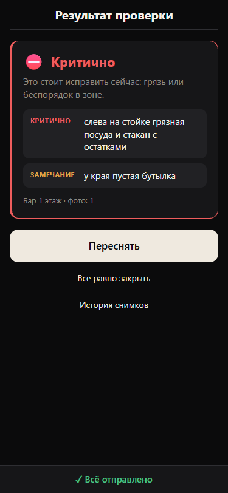
Вердикт «Критично»: что не так и кнопка «Переснять».
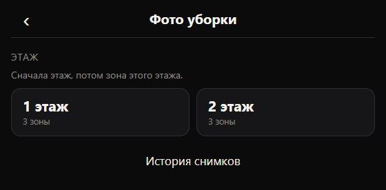
Сначала этаж…
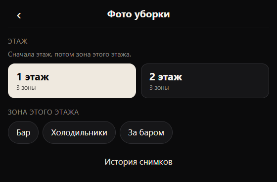
…потом зона этого этажа.
Что означает вердикт
Вердикт
Что это значит
Что делать
✓ Всё чисто
Зона выглядит убранной, замечаний нет.
Нажмите «Понятно» и идите дальше.
⚠ Есть замечания
Что-то стоит поправить, но это не критично.
Посмотрите список замечаний, поправьте. Можно переснять.
⛔ Критично
Грязь или беспорядок в зоне.
Исправьте сейчас и нажмите «Переснять». Если исправить нечем — «Всё равно закрыть» и скажите старшему.
? Не удалось проверить
Зону не видно целиком или проверка не удалась.
Переснимите при свете. Не выходит — «Позже», снимок останется в истории.
Смена не блокируется
Вердикт — подсказка, а не запрет. Даже при «Критично» или «Не удалось проверить» можно нажать «Всё равно закрыть» или «Позже» и продолжить работу. Но замечание лучше исправить сразу. Без интернета снимок сохранится, а вердикт появится в «Истории снимков», когда будет связь.
9Стоп-лист
Стоп-лист показывает, чего нет в баре и сколько дней позиция стоит в стопе. Считается по фото экрана планшета.
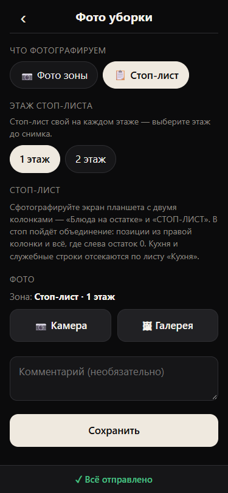
Режим «Стоп-лист»: этаж и фото экрана планшета.
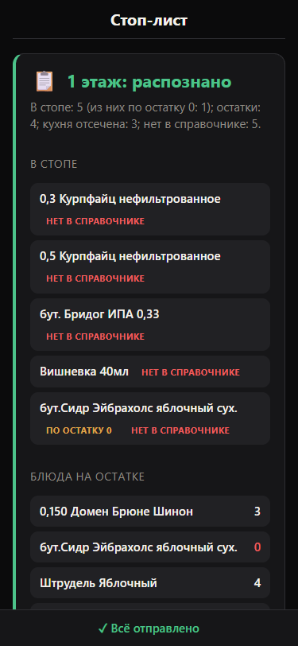
Что распозналось: стоп, остатки, кухня отдельно.
Снять стоп-лист
На главной нажмите «Стоп-лист», затем «Снять стоп-лист». Или на экране «Фото уборки» переключите на «Стоп-лист».
Выберите «Этаж стоп-листа»: 1 или 2. Стоп-лист свой на каждом этаже.
Сфотографируйте экран планшета целиком: обе колонки — «Блюда на остатке» и «СТОП-ЛИСТ» — должны быть в кадре. Ровно, без блика, не по частям.
Нажмите «Сохранить». Будет «Распознаём стоп-лист…» — обычно 2–5 секунд.
Проверьте, что распозналось, и нажмите «К стоп-листу».
В стоп попадает правая колонка и позиции с нулевым остатком слева. Кухня и служебные строки отсекаются — они ведутся отдельно.
Сколько дней позиция в стопе
Справа у каждой позиции число и слово: «4 дня», «1 день». Если позиция стоит долго, рядом появляется метка «долго в стопе», а вверху — счётчик «долго».
Счёт идёт по дням, когда были фото, отдельно по этажам. Повторное фото в тот же день счётчик не увеличивает.
Если в какие-то дни фото не было, будет пометка «без данных N», а «всего N дней» — за всё время.
«Нет в справочнике» и ручной ввод
Позиция распознана, но её нет в справочнике — дни и цифры считаются, просто покажите её менеджеру. Если фото вообще не прочиталось, будет написано «Не удалось распознать»: нажмите «Добавить позицию» (или на экране стоп-листа — «Ввести позицию»), выберите этаж и впишите название — подсказки из справочника помогут. Если позицию уже убрали со стопа, поставьте галочку «Её уже убрали со стопа (перечёркнута)» и нажмите «Добавить в стоп-лист».
Главное правило
Фотографируйте планшет целиком. Половина колонки в кадре — половина стоп-листа в учёте.
10Чек-листы
Чек-лист — список дел на открытие, закрытие или заготовки. Отметки сохраняются на телефоне сразу: без сети они уйдут, когда появится связь.
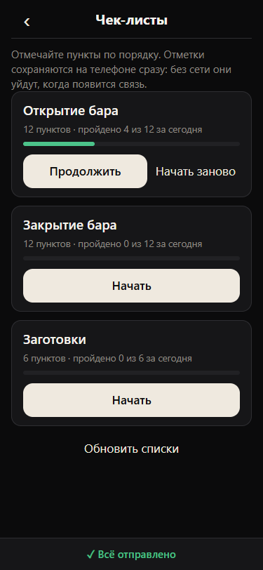
Списки и прогресс за сегодня.
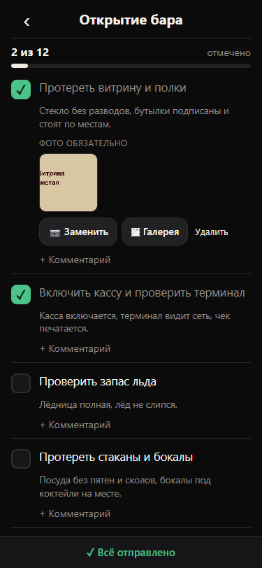
Пункты, подсказки, фото и комментарии.
На главной нажмите «Чек-листы».
Выберите список — например, «Открытие бара», «Закрытие бара», «Заготовки» — и нажмите «Начать». Если список уже начат, будет «Продолжить».
Отмечайте пункты по порядку. Под пунктом бывает подсказка, что именно проверить.
Где написано «Фото обязательно», нажмите «Камера» или «Галерея» и снимите то, о чём пункт.
Нужно пояснить — нажмите «+ Комментарий» и напишите.
В конце нажмите «Отправить».
Если пункт не выполнен
Не отмечайте его. Напишите комментарий, почему не получилось, и отправьте список. В конце приложение покажет «Не отмечено: N пунктов» — этот список увидит владелец. Отмечать «на всякий случай» нельзя: владелец видит и неотмеченные пункты, и комментарии.
Фото у обязательных пунктов
Если отметить пункт с обязательным фото без снимка, приложение предупредит: «Без фото: N пунктов. Отправить с пометкой „нет фото“?». Лучше вернуться и снять фото — иначе владелец увидит пометку.
Список можно пройти заново
На карточке списка написано «пройдено X из N за сегодня». Если нужно повторить, нажмите «Начать заново». Приложение предупредит: неотправленные отметки этого прохода пропадут, а прошлые отправленные останутся в истории.
Экран закрылся — не страшно
Прогон сохраняется на телефоне. Откройте «Чек-листы» снова: на карточке списка будет «Продолжить» — отметки на месте.
11Викторина и дуэль
Викторина проверяет знание меню и стандартов. Дуэль — то же самое, но вдвоём и на скорость.
Викторина
На главной нажмите «Викторина» → «Начать». В партии 10 вопросов.
Выберите один из ответов A, B, C, D. На вопрос 30 секунд, ответ один, без возврата.
После ответа будет пояснение и источник, затем «Дальше».
В конце — «Правильно N из 10» и разбор ошибок.
Без сети вопросы берутся из копии на телефоне; результаты и обжалования уйдут, когда появится связь.
Обжалование вопроса
Если в разборе ошибок вы видите вопрос с неверным или устаревшим ответом, нажмите «Обжаловать», при желании добавьте комментарий и нажмите «Отправить». Появится «Отправлено на проверку». Вопрос уйдёт на проверку и больше не попадётся игрокам.
Когда пользоваться: когда факт в вопросе неверный или устарел. Когда не надо: когда вы просто ошиблись — это не обжалование.
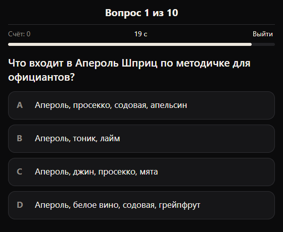
Вопрос, таймер и четыре ответа.
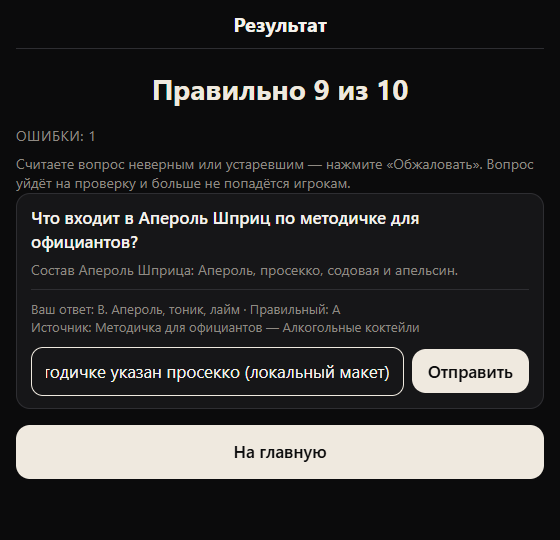
Разбор ошибки и кнопка «Обжаловать».
Дуэль
Правила в двух строках. У каждого 10 HP, на раунд 30 секунд; правильный ответ отнимает 1 HP у соперника. Если второй успел ответить правильно за 7 секунд — блок; матч идёт до 0 HP или 15 раундов.
На главной нажмите «Дуэль» → «Создать дуэль». Появится код комнаты и ссылка.
Нажмите «Скопировать ссылку» и отправьте её сопернику — или продиктуйте код.
Соперник открывает «Дуэль», вводит код в поле и нажимает «Присоединиться».
Отвечайте быстро. Внизу видно HP и раунд; после раунда — правильный ответ и урон.
В конце — «Победа», «Поражение» или «Ничья» и изменение рейтинга.
Дуэли нужен интернет
Код действует 2 минуты. Если комната закрылась — создайте новую. Матч продолжается, даже если приложение закрылось: вернитесь в «Дуэль» и продолжите.
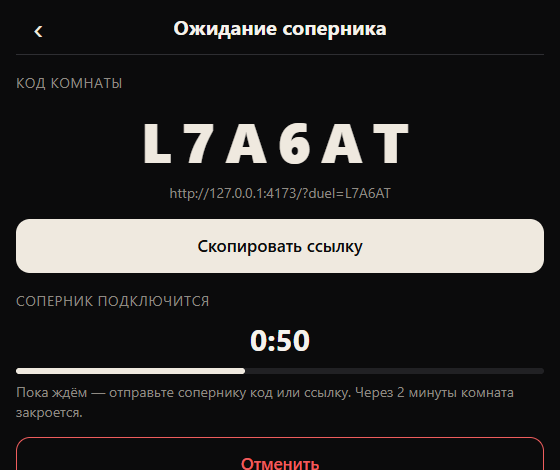
Код комнаты, ссылка и таймер ожидания.
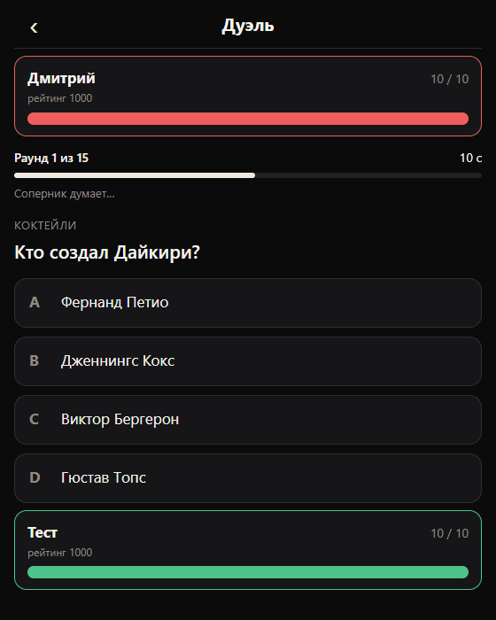
Бой: HP, раунд, вопрос и ответы.
12Проблемы и что делать
Сначала сделайте то, что в таблице. Если не помогло — звоните: не тратьте смену на догадки.
Что случилось
Что сделать
Кому звонить
Не отправляется. Внизу «Ждут отправки» или «Нет сети · ждут отправки»
1) Проверьте вайфай или мобильный интернет. 2) Нажмите на полоску внизу → «Отправить сейчас». 3) Если появилось «Отклонено» — прочитайте причину и нажмите «Повторить».
Старшему бармену, если висит больше 15 минут.
Фото не распозналось. «Не удалось проверить» или «Не удалось распознать»
1) Переснимите при свете, зону целиком, без блика. 2) Не выходит — нажмите «Позже» и работайте дальше. 3) Скажите менеджеру: снимок остался в «Истории снимков».
Менеджеру, если зона критичная (грязь, посуда).
Этикетка не печатается
1) Убедитесь, что картинка открыта в Label Expert, а не в галерее. 2) Image Print → 30×20, Original. 3) Если Label Expert пустой — «Сохранить PNG» и откройте файл в Label Expert из «Файлов».
Старшему бармену.
Не вижу принтер
1) Включите принтер, проверьте бумагу и Bluetooth. 2) Печатайте только из Label Expert — системное окно печати принтер не видит, это норма. 3) Перезапустите Label Expert и принтер.
Менеджеру или владельцу, если принтер не сопрягается.
Не пускает по PIN
1) Проверьте, что выбрано ваше имя. 2) Введите PIN ещё раз; после 8 ошибок — 15 минут ожидания. 3) Не подбирайте — попросите PIN у владельца.
Владельцу или менеджеру.
Пропал интернет
1) Продолжайте работать: всё сохраняется на телефоне. 2) Не удаляйте приложение и не очищайте данные браузера. 3) Когда сеть вернётся, полоска станет «✓ Всё отправлено».
Никому, если связь вернулась. Если нет — менеджеру.
Телефоны
Старший бармен: ______________________________
Менеджер смены: ______________________________
Впишите телефоны до того, как инструкция попадёт за бар. Если номера изменятся — исправьте здесь.
Если ничего не помогло
1) Не удаляйте приложение и не очищайте данные браузера: вместе с ними пропадут неотправленные записи. 2) Сфотографируйте экран с ошибкой. 3) Позвоните старшему бармену или менеджеру и скажите, что именно делали.
Памятка
10 главных правил смены
Если запомнить только одну страницу — эту.
Сфотографируйте стоп-лист целиком: обе колонки планшета в кадре.
Закрывайте акт переработки в ту же смену, пока помните, что и сколько было.
Печатайте этикетку сразу, как только вписали выход.
Дождитесь «✓ Всё отправлено», прежде чем закрывать приложение.
Передаёте телефон коллеге — нажмите «Сменить», не работайте под чужим именем.
Фото уборки — зона целиком, при свете, без блика.
Пункт чек-листа не выполнен — не отмечайте, напишите комментарий.
Этикетку печатаем только через Label Expert: системная печать принтер не видит.
Сомневаетесь в позиции — «+ Нет в описи»: цифра важнее названия.
PIN не подходит — не подбирайте, звоните старшему.
Где что найти
Стоп-лист
плитка «Стоп-лист» → «Снять стоп-лист»
Акт переработки
плитка «Переработка» → акт или «⏳ В работе»
Этикетка 30×20
внизу акта или «Этикетка пустой заготовки»
Фото уборки
плитка «Фото уборки» → этаж → зона
Чек-лист
плитка «Чек-листы» → список → «Начать»
Отправка
нажмите на полоску внизу экрана
Перед уходом проверьте
Стоп-лист снят на нужных этажах?
Все акты из «В работе» закрыты?
Этикетки на заготовках напечатаны?
Чек-лист закрытия отправлен?
Внизу — «✓ Всё отправлено»?
Телефон старшего бармена: ______________________________
Телефон менеджера: ______________________________
ESSE — журнал бара. Инструкция для барменов, версия 1.0 · 24.11.2026. Адрес приложения: sangoskarlet.github.io/bar-app/